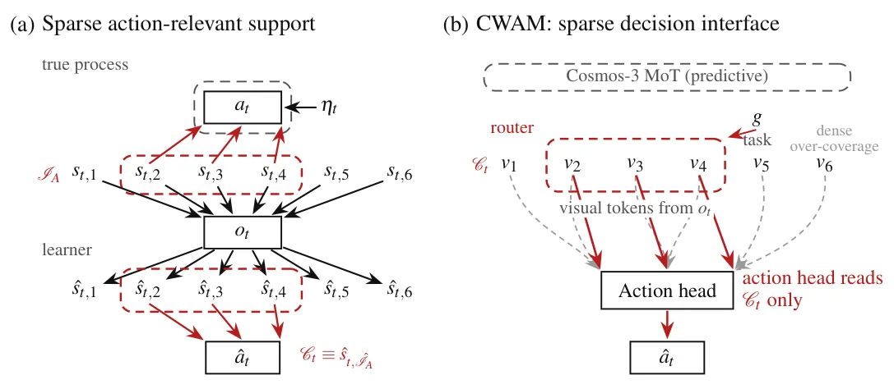
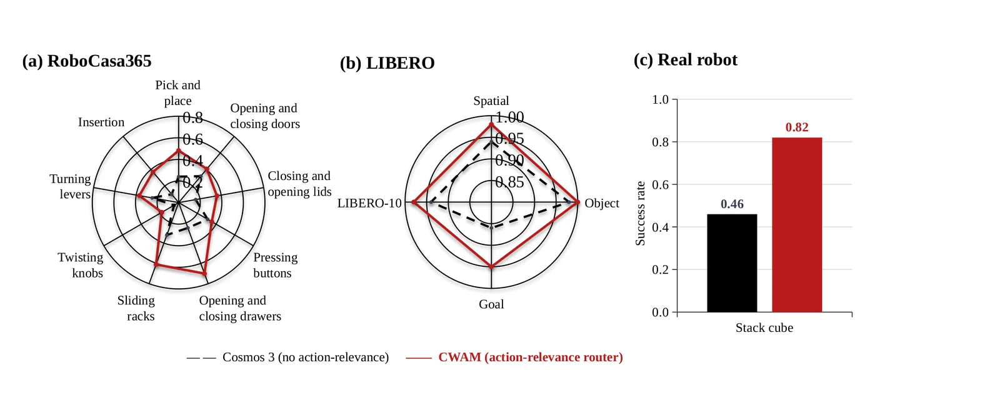
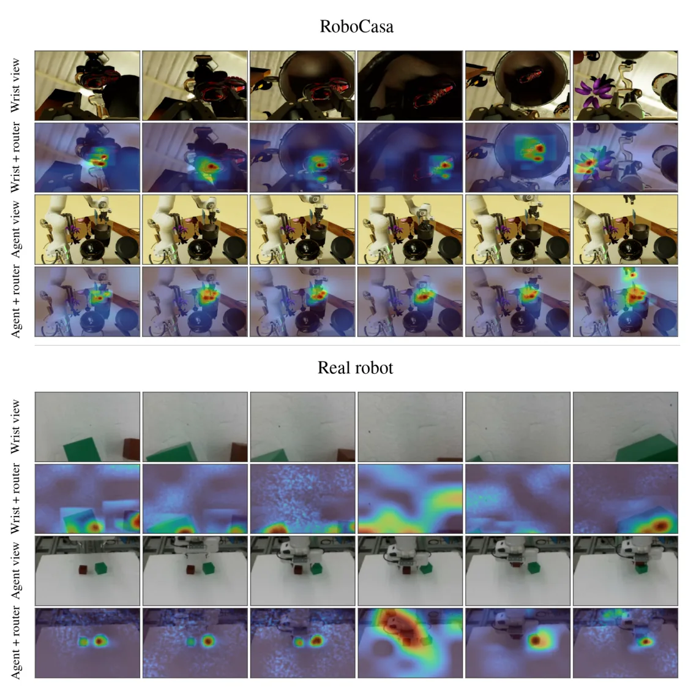

O Problema da Entanglement em Modelos de Mundo
Modelos de Ação de Mundo (WAMs) aprendem variáveis latentes a partir de observações, como imagens, para prever a evolução de uma cena e gerar ações. Modelos recentes, como o Fast-WAM e o Cosmos 3, conseguem extrair essas variáveis latentes e usá-las tanto para previsão visual quanto para controle de robôs. No entanto, há um problema fundamental: a previsão precisa abranger toda a cena, enquanto apenas uma fração dela causa as ações executadas pelo agente.
Imagine um robô empilhando blocos. A ação depende da posição dos blocos e do estado do gripper. Mas a imagem também contém a toalha da mesa ou objetos ao fundo que não influenciam o movimento. Os WAMs aprendem variáveis latentes que descrevem tudo isso. Chamamos de variáveis latentes relevantes para a ação aquelas que realmente causam o movimento, e variáveis de incômodo (nuisance variables) aquelas que são irrelevantes para a ação, mas necessárias para a previsão visual completa.
O problema é que ajustar um WAM a demonstrações não garante que ele use apenas as variáveis causais. O modelo pode aprender a imitar a ação misturando variáveis relevantes com as irrelevantes. Sem suposições adicionais, as variáveis latentes causais não podem ser identificadas apenas pelas observações, pois dois modelos diferentes podem gerar a mesma distribuição de dados, mas com variáveis latentes transformadas de forma arbitrária.
Identificabilidade via Esparsidade
Trabalhos anteriores em Análise de Componentes Independentes Não-Lineares (ICA) tentam resolver essa ambiguidade usando variáveis auxiliares, como índices de tempo ou domínio, ou explorando dependência temporal. Outros usam intervenções conhecidas. No entanto, em cenários complexos de robótica, essas suposições frequentemente falham. As dinâmicas podem não ser markovianas, e intervenções controladas são caras ou impossíveis.
Os autores propõem uma abordagem diferente: restringir a estrutura de dependência através da esparsidade. Eles provam que, sob condições de não-degenerescência e uma restrição de esparsidade, as variáveis latentes usadas para gerar ações são uma função invertível das variáveis latentes relevantes para a ação, e apenas delas. Isso significa que o modelo pode identificar a estrutura causal real, até uma permutação das variáveis.
Esta identificação não requer dependência temporal suficiente, nem suposições sobre como os regimes não observados evoluem, e vale mesmo quando as variáveis relevantes são estatisticamente dependentes do resto. A chave é que a esparsidade força o cabeçalho de ação a depender de poucas dimensões latentes, isolando assim as causas reais da ação do ruído de fundo.
Método: Causal WAM (CWAM)
O CausalWAM (CWAM) é implementado adicionando um caminho de roteamento esparsa ao cabeçalho de ação de um WAM pré-treinado. O objetivo de modelagem do mundo permanece inalterado, mas o mecanismo de geração de ação é modificado. Especificamente, o modelo aprende a selecionar um subconjunto compacto de variáveis latentes, chamado estado compacto Ct, que contém as informações necessárias para a ação.
Na prática, isso é alcançado aplicando uma penalidade de esparsidade nas colunas da matriz de pesos do cabeçalho de ação. A penalidade é do tipo group penalty, que atua em nível de colunas, servindo como uma aproximação da restrição teórica. As coordenadas com os maiores pesos absolutos médios são selecionadas para formar Ct. Isso cria um roteamento esparsa que conecta apenas as variáveis latentes causais ao gerador de ações.
O modelo é treinado com dados de demonstração. O encoder MLP mapeia as observações para o estado latente completo. Em seguida, a esparsidade no cabeçalho de ação força o modelo a ignorar as variáveis de incômodo. O resultado é que Ct se torna uma representação pura das causas da ação, enquanto o estado latente completo continua sendo usado para prever a próxima imagem, mantendo a fidelidade visual.

Validação Teórica em Dados Sintéticos
Para validar a teoria, os autores realizaram experimentos em processos de ação de mundo sintéticos com variáveis latentes conhecidas. O setup envolve 20 variáveis latentes, das quais 4 são relevantes para a ação. O objetivo era verificar se o estado compacto Ct recuperava corretamente o bloco de variáveis causais.
Os resultados mostram que as coordenadas selecionadas pelo CWAM com esparsidade decodificam as variáveis latentes relevantes para a ação tão bem quanto a leitura densa (usando todas as variáveis). Além disso, o excesso de informação sobre as variáveis de incômodo é próximo de zero, indicando que Ct não contém informação irrelevante sobre o ruído.
Em contraste, modelos sem esparsidade, como um VAE MLP padrão ou uma leitura densa, decodificam as variáveis de incômodo muito além do necessário. Isso confirma que a esparsidade é essencial para separar as causas das ações do ruído de fundo, conforme previsto pelo Teorema 2 do paper.
Resultados em Robótica e Simulação
Os autores avaliaram o CWAM no RoboCasa365, LIBERO e em um robô real Franka. A métrica principal foi o sucesso em ciclo fechado. O CWAM foi comparado com uma baseline baseada no Cosmos 3, ajustada de forma idêntica, mas sem o roteador esparsa.
Os resultados mostram que o CWAM supera a baseline em todas as famílias de habilidades do RoboCasa365, no LIBERO e na tarefa de empilhamento de cubos no robô real. O ganho é particularmente grande em tarefas como abrir gavetas, onde a separação clara entre variáveis causais e ruído é crucial para o sucesso.
Análises adicionais mostraram que os tokens roteados esparsamente mantêm a maior parte do sucesso do modelo completo. Isso indica que a informação causal isolada é suficiente para a ação, e que o ruído visual pode, de fato, ser ignorado sem prejudicar o desempenho, desde que a previsão visual seja mantida pelo estado completo.

Visualização do Foco Causal
Para entender o que o modelo está aprendendo, os autores visualizaram a massa de roteamento em diferentes frames. As visualizações mostram que, na maioria dos frames, a massa de roteamento cai sobre o objeto sendo movido e seu alvo.
Isso confirma que o mecanismo de esparsidade está funcionando como esperado: o modelo está focando nas variáveis latentes correspondentes aos objetos relevantes para a ação, ignorando o fundo e outros elementos da cena. Essa interpretação visual reforça a validade teórica e prática da abordagem proposta.

Limitações e Conclusões
Apesar dos resultados promissores, o paper reconhece limitações. A principal é a falta de identificabilidade componente-a-componente, o que significa que as variáveis latentes individuais não são totalmente desambiguadas. Isso pode não ser um problema para separar ações, mas seria útil para intervenções precisas. Além disso, a abordagem depende da suposição de esparsidade, que pode não valer em todos os cenários.
Os autores concluem que o CausalWAM representa um passo inicial importante para a compreensão causal de ações em modelos de mundo. Eles destacam que a esparsidade permite a identificação de causas a partir de decomposição observacional, sem necessidade de intervenções ou supervisão adicional. Isso abre caminho para futuras pesquisas em WAMs causais.
Implicações para Robótica
Para a robótica, a separação clara entre variáveis causais e de incômodo é vital. Robôs que operam em ambientes dinâmicos e não estruturados precisam ser robustos a mudanças no fundo da cena. O CWAM oferece um mecanismo para isso, permitindo que o controle seja baseado apenas nas variáveis relevantes, aumentando a generalização e a eficiência.
Os resultados no Franka real demonstram que a abordagem não é apenas teórica, mas prática. O ganho em sucesso em ciclo fechado sugere que a esparsidade ajuda o robô a tomar decisões mais rápidas e precisas, ignorando distrações visuais.
Comparação com Baselines
O CWAM foi comparado com um VAE MLP padrão e com leituras densas de modelos sem esparsidade. Os resultados mostram que, embora esses modelos possam prever a próxima imagem com precisão, eles falham em isolar as variáveis causais. Isso leva a uma menor eficiência em tarefas de controle, onde a precisão da ação é mais importante do que a fidelidade visual completa.
A tabela 1 do paper mostra que o CWAM com esparsidade tem um Delta_nuis próximo de zero, enquanto os modelos sem esparsidade têm valores altos. Isso confirma que a esparsidade é eficaz em remover a influência de variáveis irrelevantes.
O Papel do Roteamento Esparsa
O roteamento esparsa é o componente chave do CWAM. Ele permite que o modelo selecione dinamicamente quais variáveis latentes são relevantes para a ação em cada passo de tempo. Isso é feito através da penalidade de esparsidade no cabeçalho de ação, que força a maioria dos pesos a zero.
Esse mecanismo é diferente de abordagens anteriores que usam variáveis auxiliares ou intervenções. O CWAM aprende a esparsidade diretamente dos dados de demonstração, sem necessidade de supervisão adicional ou suposições fortes sobre a dinâmica do ambiente.
Generalização e Robustez
Os experimentos em diferentes ambientes (RoboCasa365, LIBERO, Franka) mostram que o CWAM é robusto a variações no setup. O modelo generaliza bem para tarefas não vistas durante o treinamento, sugerindo que a estrutura causal aprendida é fundamental e não específica de um único ambiente.
Além disso, o CWAM mantém seu desempenho mesmo quando as variáveis de incômodo evoluem de forma imprevisível. Isso é consistente com a teoria, que não requer suposições sobre a evolução dos regimes não observados.
Futuras Direções de Pesquisa
Os autores sugerem que futuras pesquisas podem explorar a identificabilidade componente-a-componente, o que permitiria intervenções mais precisas. Além disso, a abordagem pode ser estendida para outros tipos de modelos de mundo e tarefas de controle.
Outra direção é investigar se a esparsidade pode ser substituída por outras restrições estruturais que também permitam a identificação causal. Isso poderia levar a modelos ainda mais flexíveis e eficientes.
Conclusão Final
O CausalWAM é uma contribuição significativa para a área de modelos de mundo e robótica. Ao usar esparsidade para isolar variáveis causais, o modelo melhora a eficiência e a robustez do controle em ambientes complexos. Os resultados teóricos e experimentais validam a abordagem, abrindo caminho para futuras pesquisas em IA causal.
O que fica
- CausalWAM usa esparsidade no cabeçalho de ação para identificar variáveis latentes causais, separando-as de variáveis irrelevantes (ruído).
- A teoria prova que, sob restrições de esparsidade, as variáveis de ação são uma função invertível das causas reais, sem precisar de intervenções ou dependência temporal forte.
- Experimentos em dados sintéticos e robôs reais (Franka) mostram que o roteamento esparsa melhora o sucesso em ciclo fechado em comparação com baselines como Cosmos 3.
Paper original: CausalWAM: Learning the Causes of Actions in World Action Models
Comentários
Nenhum comentário ainda. Seja o primeiro.